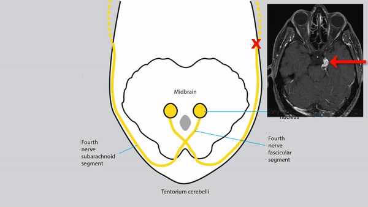

Fourth Nerve Pathway


- Nucleus lies near the midline in the caudal midbrain, ventral to the inferior colliculus
- Fascicular segment travels dorsally around the Sylvian aqueduct, crossing to the opposite side in the anterior medullary velum caudal to the inferior colliculus
- Subarachnoid segment travels medial to the tentorium cerebelli, piercing it to enter the cavernous sinus
- Cavernous segment lies in the lateral cavernous sinus wall inferior to the third nerve, exiting in the superior orbital fissure
- Orbital segment enters the orbit outside the muscle cone and supplies the superior oblique muscle
-
Tip: intraconal anesthetic injections for ocular surgery often spare intorsion because the fourth nerve lies outside the muscle cone
- Superior oblique muscle passes through a sleeve of dura on the anterior medial orbital wall called the trochlea, where its tendon bends more than 90 degrees to insert on the top of the globe


-
Nuclear lesion
-
Tip: lesions of the fourth nerve nucleus occur so rarely that you can forget about them!
-
-
Fascicular lesion
- Produces a fourth nerve palsy in the eye opposite to side of the damaged fascicle
- May be accompanied by other clinical manifestations of dorsal midbrain dysfunction
- Common causes: head trauma, thalamic and dorsal midbrain lesions (demyelination, stroke, tumor, aqueductal stenosis, ventricular shunt failure)
-
Tip: bilateral fourth nerve palsy of whatever cause can be distinguished from unilateral fourth nerve palsy by these features:
-
Right hypertropia in left gaze, left hypertropia in right gaze
-
V-pattern esotropia
-

-
Subarachnoid lesion
- Produces an ipsilateral fourth nerve palsy with a misalignment pattern similar to that of a fascicular lesion, but often in isolation
- Common causes: head trauma, neurosurgery, ischemia
- Uncommon causes: tentorium cerebelli region masses and hemorrhage, meningitis, neuritis, schwannoma
 -
Cavernous lesion
- Produces an ipsilateral fourth nerve palsy with a misalignment pattern similar to that of fascicular lesion, but always in combination with dysfunction of other nerves in the cavernous sinus
-
Tip: the fourth nerve is the most resistant of the ocular motor cranial nerves to cavernous sinus lesions, so do not expect an isolated fourth nerve palsy from a lesion here
- Common causes: tumors, aneurysms, inflammations
-
Orbital lesion
- An aging superior oblique muscle often becomes weak, displaying a pattern of misalignment that differs from acquired fourth nerve palsy in that the hypertropia is never worse in downgaze
- Superior oblique trochlea may be injured by trauma, including surgery, causing a superior oblique palsy that resembles that produced by other acquired lesions
- Superior oblique tendon sheath may become inflamed, limiting movement of its tendon, and producing ipsilaterally reduced supraduction-in-adduction, a phenomenon known as Brown syndrome